library(tidyverse)
library(SpatialExperiment)
library(here)
library(ggspavis)
library(scater)
library(scran)
library(ggpubr)
library(ggsci)
library(pheatmap)merge ST data human LN - batch 1
Load packages
Load and merge spe objects
basedir <- here()
metaDat <- read_tsv(paste0(basedir, "/data/ST/metadata.txt"), col_names = T)
assignSamples <- function(smpNam, basedirSmp){
smpNamFull <- list.files(path = paste0(basedirSmp, "/data/ST/"),
pattern = paste0(smpNam, ".*_spe.rds"))
speSmp <- readRDS(paste0(basedirSmp, "/data/ST/", smpNamFull))
return(speSmp)
}
####################################################################
for(i in 1:length(metaDat$Sample)){
speX <- assignSamples(smpNam = metaDat$Sample[i],
basedirSmp = basedir)
if(exists("spe")){
spe <- cbind(spe, speX)
}else{
spe <- speX
}
}
remove(speX)Examine samples before removal of low quality spots
## before QC
table(spe@colData$sample_id)
318981_1-1_20230531_Hu_pat58_LN_squA 318981_2-2_20230531_Hu_pat56_LN_squB
4992 4992
318981_3-3_20230531_Hu_pat55_LN_squC 318981_4-4_20230531_Hu_pat55_LN_squD
4992 4992 dim(spe)[1] 60666 19968plotSpots(spe) + facet_grid(~ sample_id)
# subset to keep only spots over tissue
spe <- spe[, colData(spe)$in_tissue == 1]
dim(spe)[1] 60666 5153table(spe@colData$sample_id)
318981_1-1_20230531_Hu_pat58_LN_squA 318981_2-2_20230531_Hu_pat56_LN_squB
747 2194
318981_3-3_20230531_Hu_pat55_LN_squC 318981_4-4_20230531_Hu_pat55_LN_squD
1019 1193 plotSpots(spe) + facet_grid(~ sample_id)
run QC
# identify mitochondrial genes
is_mito <- grepl("(^MT-)|(^mt-)", rowData(spe)$symbol)
table(is_mito)is_mito
FALSE TRUE
60629 37 rowData(spe)$symbol[is_mito] [1] "MT-TF" "MT-RNR1" "MT-TV" "MT-RNR2" "MT-TL1" "MT-ND1" "MT-TI"
[8] "MT-TQ" "MT-TM" "MT-ND2" "MT-TW" "MT-TA" "MT-TN" "MT-TC"
[15] "MT-TY" "MT-CO1" "MT-TS1" "MT-TD" "MT-CO2" "MT-TK" "MT-ATP8"
[22] "MT-ATP6" "MT-CO3" "MT-TG" "MT-ND3" "MT-TR" "MT-ND4L" "MT-ND4"
[29] "MT-TH" "MT-TS2" "MT-TL2" "MT-ND5" "MT-ND6" "MT-TE" "MT-CYB"
[36] "MT-TT" "MT-TP" # run QC parameters per sample
speList <- lapply(unique(colData(spe)$sample_id), function(sid){
speSub <- spe[, which(colData(spe)$sample_id == sid)]
speSub <- addPerCellQC(speSub, subsets = list(mito = is_mito))
hist(colData(speSub)$sum, breaks = 50,
main = paste0("sum - ", sid), xlab = "sum")
hist(colData(speSub)$detected, breaks = 50,
main = paste0("detected - ", sid), xlab = "detected")
hist(colData(speSub)$subsets_mito_percent, breaks = 50,
main = paste0("subsets_mito_percent - ", sid),
xlab = "subsets_mito_percent")
## remove spots with high deviation from median
speSub@colData$total_counts_drop <- isOutlier(speSub@colData$sum, nmads = 5,
type = "both", log = TRUE)
speSub@colData$total_features_drop <- isOutlier(speSub@colData$detected,
nmads = 5, type = "both",
log = TRUE)
speSub@colData$mito_drop <- isOutlier(speSub@colData$subsets_mito_percent,
nmads = 10, type = "higher",
log = FALSE)
speSub@colData$mito_drop <- FALSE
speSub <- speSub
})


## vis spots with low quality
lapply(speList, function(speSub){
p <- plotQC(speSub, type = "spots",
discard = "total_counts_drop") +
ggtitle(speSub@colData$sample_id)
p
})[[1]]
[[2]]
[[3]]
[[4]]
lapply(speList, function(speSub){
p <- plotQC(speSub, type = "spots",
discard = "total_features_drop") +
ggtitle(speSub@colData$sample_id)
p
})[[1]]
[[2]]
[[3]]
[[4]]
lapply(speList, function(speSub){
p <- plotQC(speSub, type = "spots",
discard = "mito_drop") +
ggtitle(speSub@colData$sample_id)
p
})[[1]]
[[2]]
[[3]]
[[4]]
## cnt spots with low quality
lapply(speList, function(speSub){
table(speSub@colData$total_counts_drop)
})[[1]]
FALSE
747
[[2]]
FALSE TRUE
2192 2
[[3]]
FALSE TRUE
1015 4
[[4]]
FALSE TRUE
1191 2 lapply(speList, function(speSub){
table(speSub@colData$total_features_drop)
})[[1]]
FALSE
747
[[2]]
FALSE TRUE
2188 6
[[3]]
FALSE TRUE
1013 6
[[4]]
FALSE TRUE
1186 7 lapply(speList, function(speSub){
table(speSub@colData$mito_drop)
})[[1]]
FALSE
747
[[2]]
FALSE
2194
[[3]]
FALSE
1019
[[4]]
FALSE
1193 ## remove plots with low quality
speList <- lapply(speList, function(speSub){
speSub <- speSub[, !(speSub@colData$total_counts_drop |
speSub@colData$total_features_drop |
speSub@colData$mito_drop)]
sid <- unique(colData(speSub)$sample_id)
## after QC
hist(colData(speSub)$sum, breaks = 50,
main = paste0("sum after QC - ", sid), xlab = "sum")
hist(colData(speSub)$detected, breaks = 50,
main = paste0("detected after QC - ", sid), xlab = "detected")
hist(colData(speSub)$subsets_mito_percent, breaks = 50,
main = paste0("subsets_mito_percent after QC - ", sid),
xlab = "subsets_mito_percent")
speSub <- speSub
})


names(speList) <- unique(colData(spe)$sample_id)Examine samples after removal of low quality spots
## vis spots after QC
lapply(speList, function(speSub){
p <- plotSpots(speSub) +
ggtitle(speSub@colData$sample_id)
p
})$`318981_1-1_20230531_Hu_pat58_LN_squA`
$`318981_2-2_20230531_Hu_pat56_LN_squB`
$`318981_3-3_20230531_Hu_pat55_LN_squC`
$`318981_4-4_20230531_Hu_pat55_LN_squD`
## cnt spots after QC
lapply(speList, function(speSub){
dim(speSub)
})$`318981_1-1_20230531_Hu_pat58_LN_squA`
[1] 60666 747
$`318981_2-2_20230531_Hu_pat56_LN_squB`
[1] 60666 2188
$`318981_3-3_20230531_Hu_pat55_LN_squC`
[1] 60666 1013
$`318981_4-4_20230531_Hu_pat55_LN_squD`
[1] 60666 1186Normalization
speList <- lapply(speList, function(speSub){
speSub <- computeLibraryFactors(speSub)
summary(sizeFactors(speSub))
sid <- unique(colData(speSub)$sample_id)
hist(sizeFactors(speSub), breaks = 20, main = sid)
speSub <- logNormCounts(speSub)
})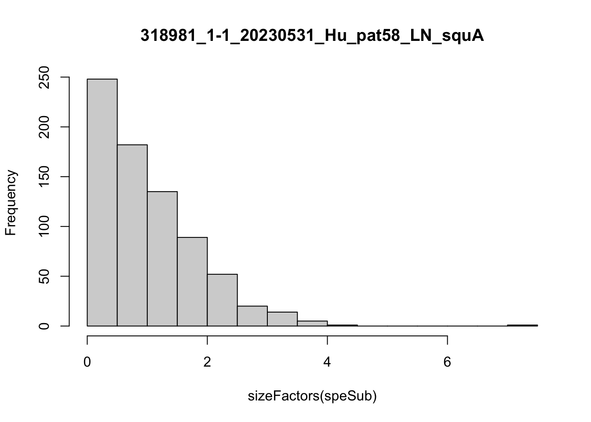
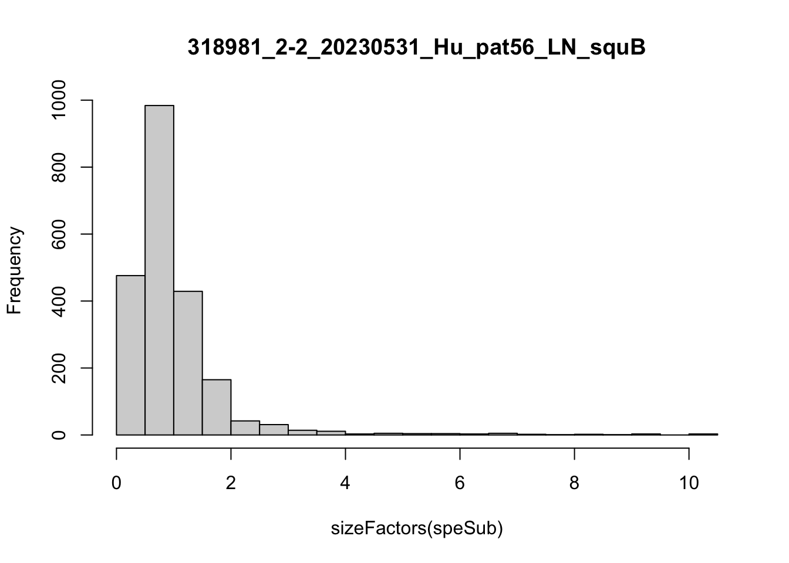
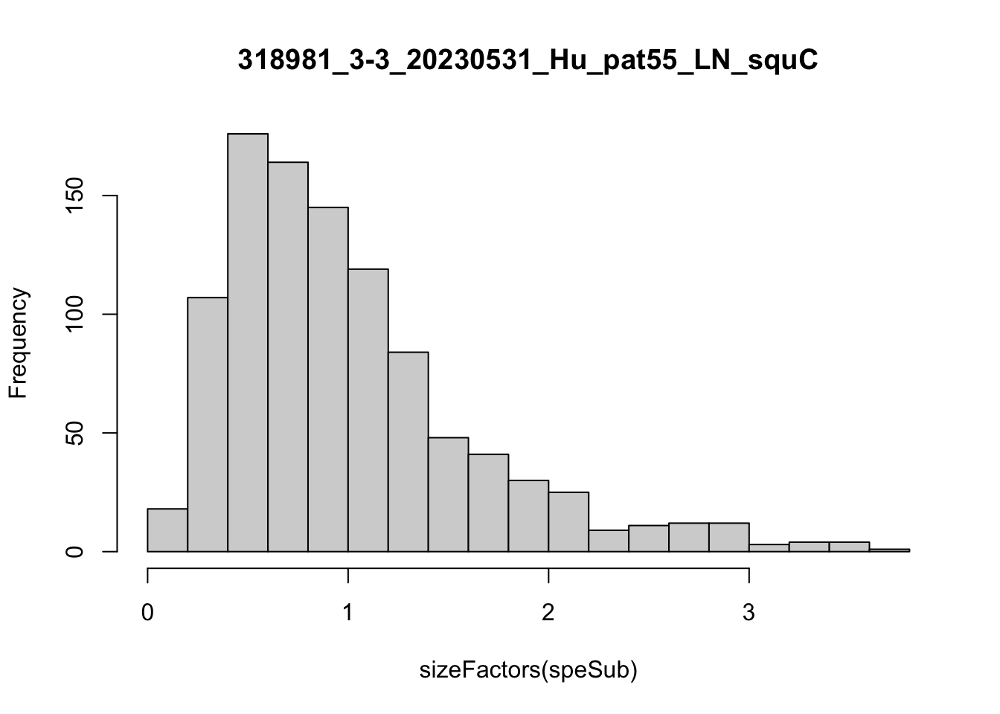
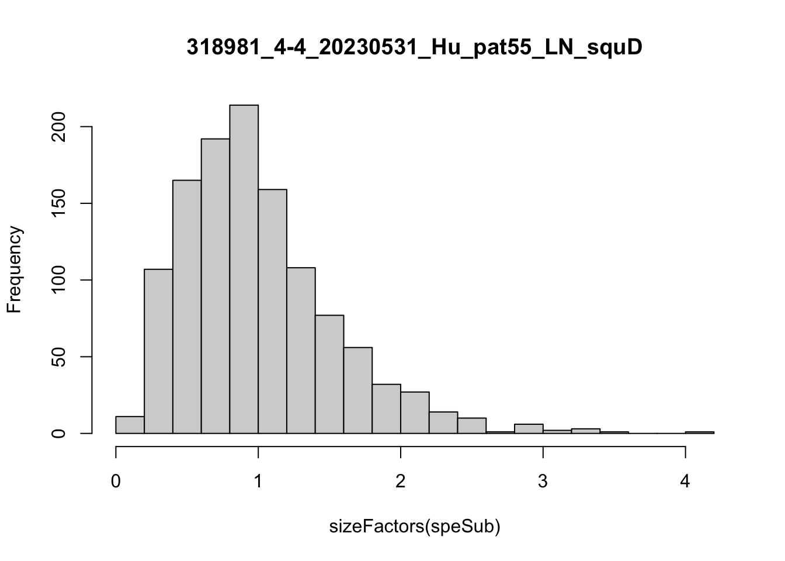
Feature selection
hvgList <- lapply(speList, function(speSub){
# fit mean-variance relationship
dec <- modelGeneVar(speSub)
# visualize mean-variance relationship
fit <- metadata(dec)
plot(fit$mean, fit$var,
xlab = "mean of log-expression", ylab = "variance of log-expression")
curve(fit$trend(x), col = "dodgerblue", add = TRUE, lwd = 2)
top_hvgs <- getTopHVGs(dec, prop = 0.1)
})


names(hvgList) <- names(speList)
lengths(hvgList)318981_1-1_20230531_Hu_pat58_LN_squA 318981_2-2_20230531_Hu_pat56_LN_squB
1114 1779
318981_3-3_20230531_Hu_pat55_LN_squC 318981_4-4_20230531_Hu_pat55_LN_squD
1457 1454 Dimensionality reduction
speList <- lapply(speList, function(speSub){
sid <- unique(colData(speSub)$sample_id)
top_hvgs <- hvgList[[sid]]
speSub <- runPCA(speSub, subset_row = top_hvgs)
speSub <- runUMAP(speSub, dimred = "PCA")
colnames(reducedDim(speSub, "UMAP")) <- paste0("UMAP", 1:2)
speSub <- speSub
})
lapply(speList, function(speSub){
sid <- unique(colData(speSub)$sample_id)
plotDimRed(speSub, type = "PCA") +
ggtitle(sid)
})$`318981_1-1_20230531_Hu_pat58_LN_squA`
$`318981_2-2_20230531_Hu_pat56_LN_squB`
$`318981_3-3_20230531_Hu_pat55_LN_squC`
$`318981_4-4_20230531_Hu_pat55_LN_squD`
lapply(speList, function(speSub){
sid <- unique(colData(speSub)$sample_id)
plotDimRed(speSub, type = "UMAP") +
ggtitle(sid)
})$`318981_1-1_20230531_Hu_pat58_LN_squA`
$`318981_2-2_20230531_Hu_pat56_LN_squB`
$`318981_3-3_20230531_Hu_pat55_LN_squC`
$`318981_4-4_20230531_Hu_pat55_LN_squD`
clustering
speList <- lapply(speList, function(speSub){
# graph-based clustering
k <- 15
g <- buildSNNGraph(speSub, k = k, use.dimred = "PCA")
g_walk <- igraph::cluster_walktrap(g)
clus <- g_walk$membership
table(clus)
colLabels(speSub) <- factor(clus)
speSub <- speSub
})
colPal <- c("#F0027F", "#377EB8", "#4DAF4A", "#984EA3", "#FFD700", "#FF7F00",
"#1A1A1A", "#666666", pal_futurama()(10))
lapply(speList, function(speSub){
sid <- unique(colData(speSub)$sample_id)
plotSpots(speSub, annotate = "label",
palette = colPal) +
ggtitle(sid)
})$`318981_1-1_20230531_Hu_pat58_LN_squA`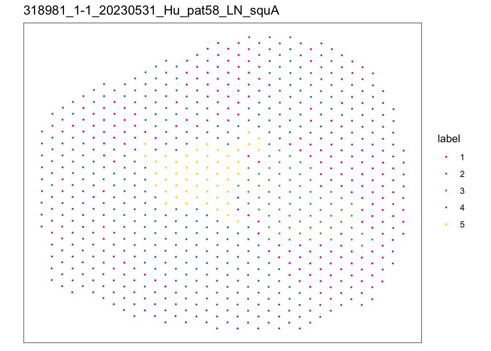
$`318981_2-2_20230531_Hu_pat56_LN_squB`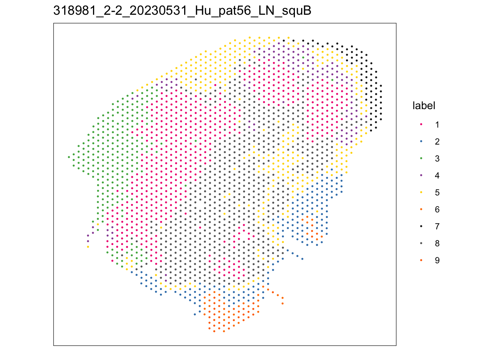
$`318981_3-3_20230531_Hu_pat55_LN_squC`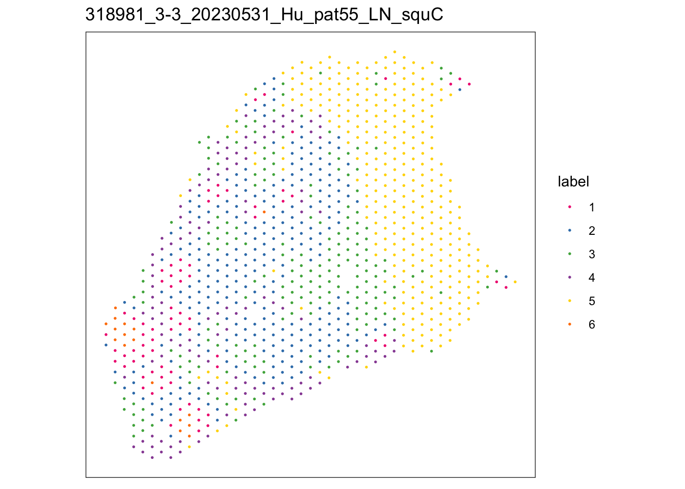
$`318981_4-4_20230531_Hu_pat55_LN_squD`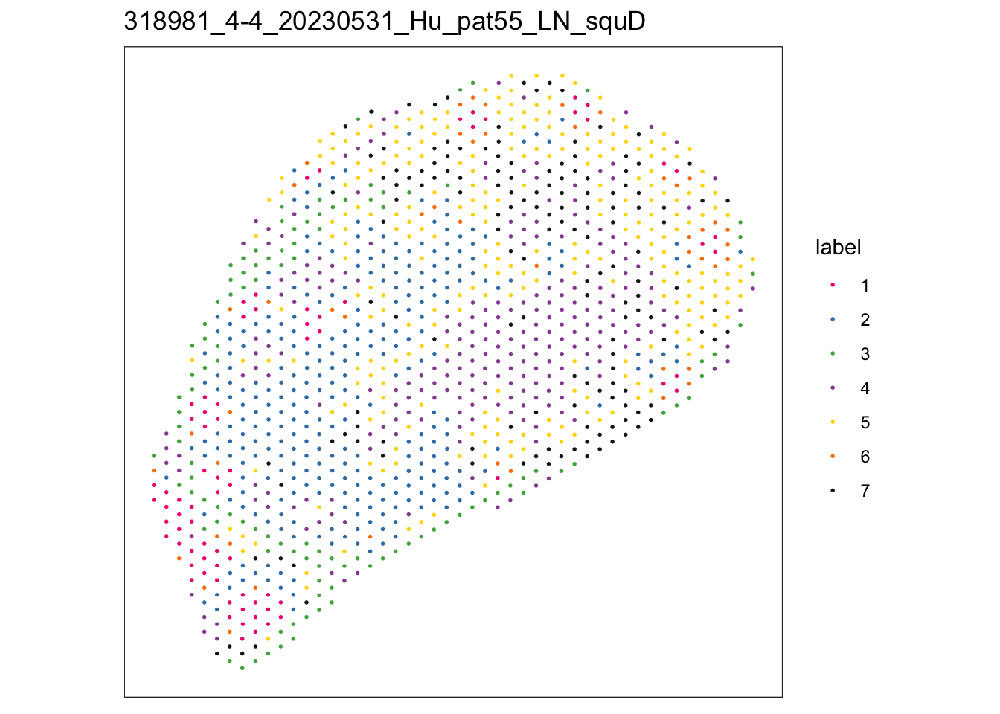
lapply(speList, function(speSub){
sid <- unique(colData(speSub)$sample_id)
plotDimRed(speSub, type = "UMAP",
annotate = "label", palette = colPal) +
ggtitle(sid)
})$`318981_1-1_20230531_Hu_pat58_LN_squA`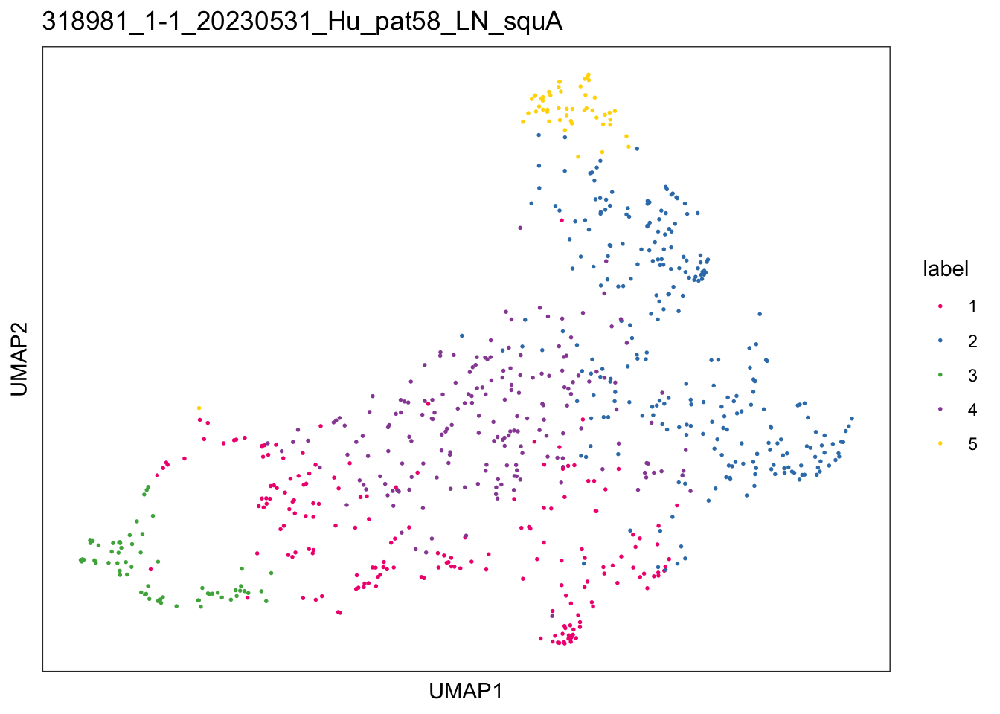
$`318981_2-2_20230531_Hu_pat56_LN_squB`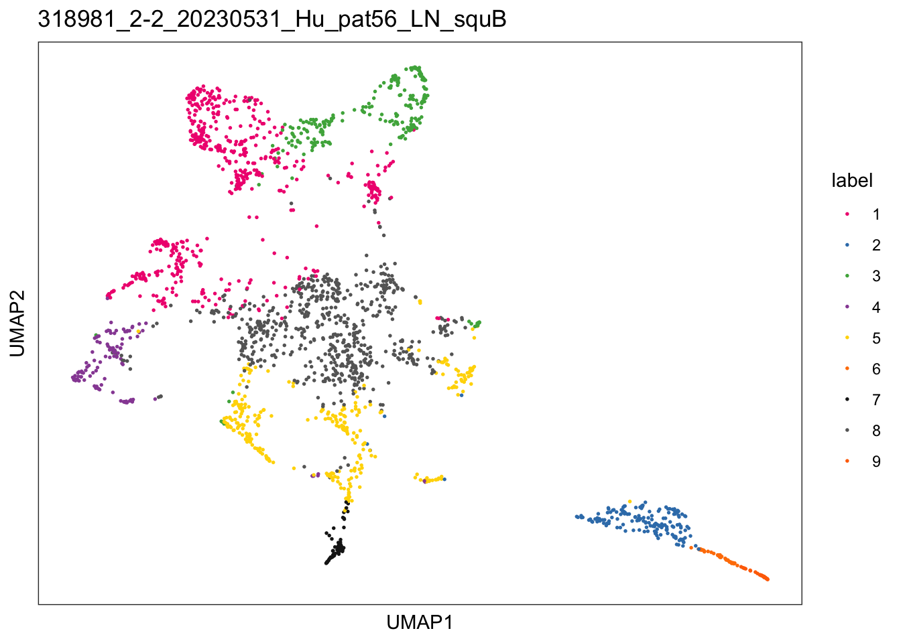
$`318981_3-3_20230531_Hu_pat55_LN_squC`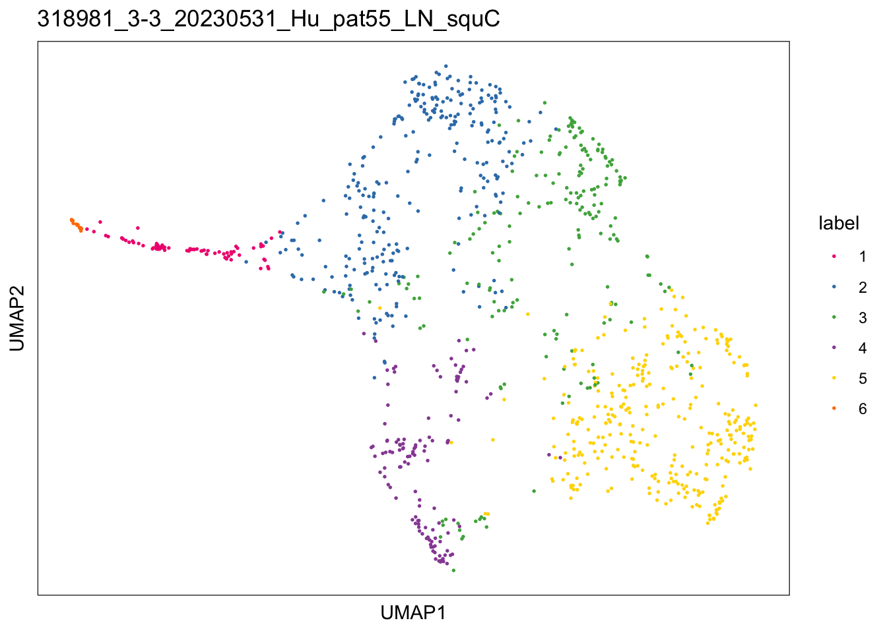
$`318981_4-4_20230531_Hu_pat55_LN_squD`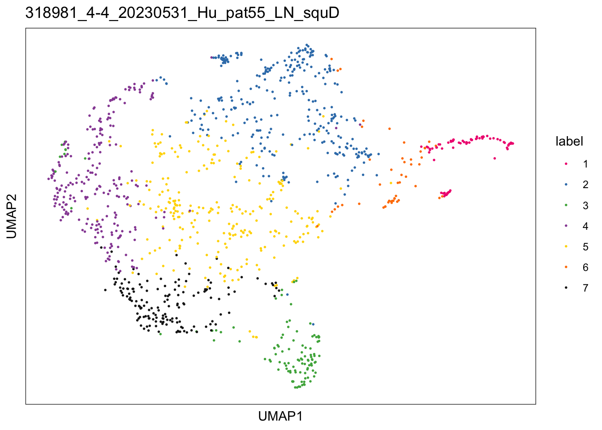
lapply(speList, function(speSub){
sid <- unique(colData(speSub)$sample_id)
plotDimRed(speSub, type = "PCA",
annotate = "label", palette = colPal) +
ggtitle(sid)
})$`318981_1-1_20230531_Hu_pat58_LN_squA`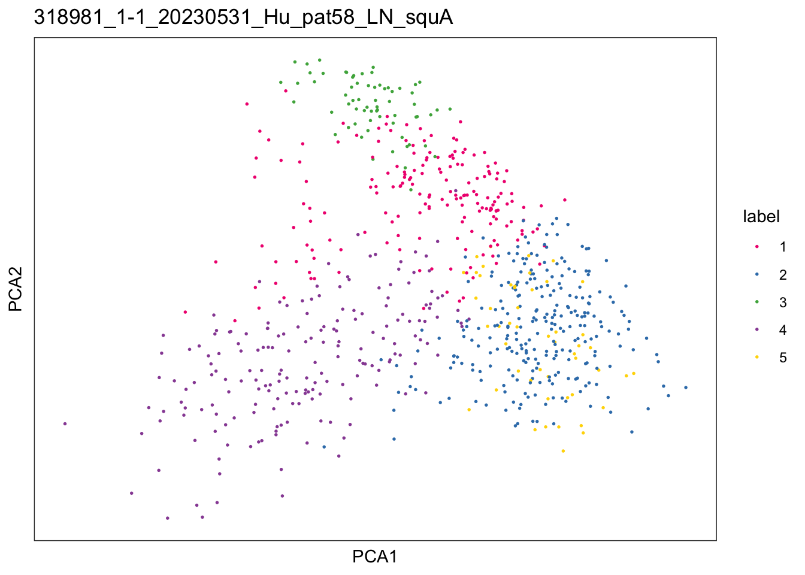
$`318981_2-2_20230531_Hu_pat56_LN_squB`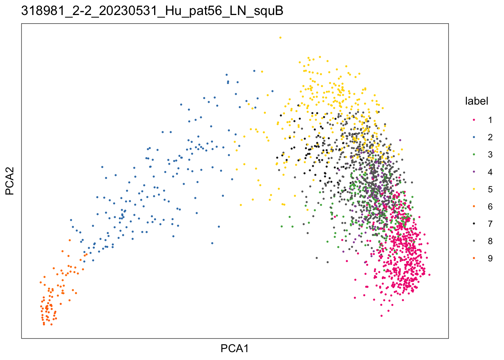
$`318981_3-3_20230531_Hu_pat55_LN_squC`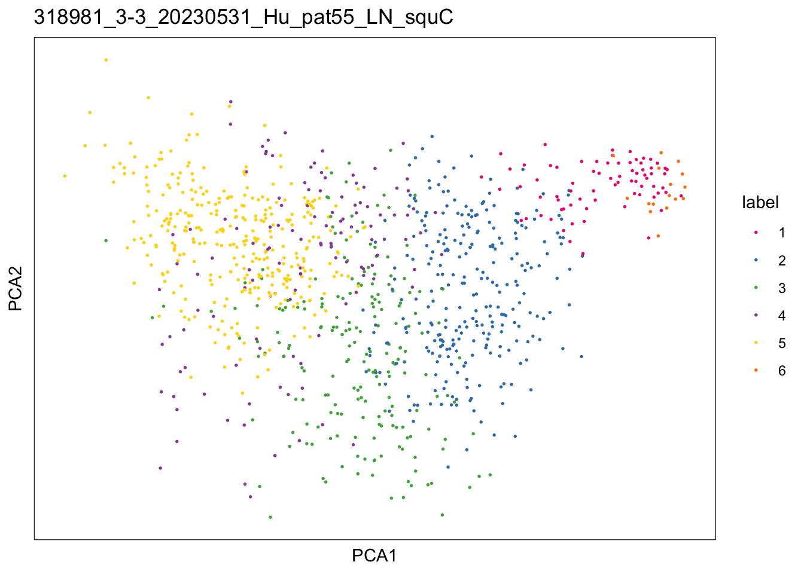
$`318981_4-4_20230531_Hu_pat55_LN_squD`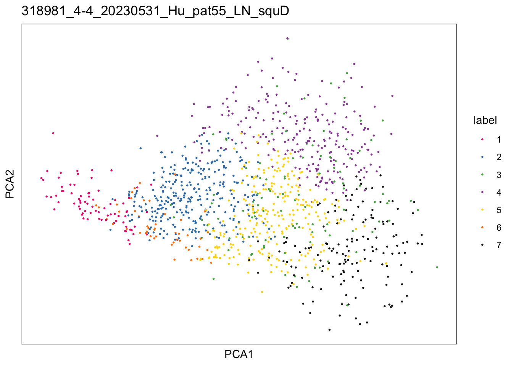
Marker genes
markerList <- lapply(speList, function(speSub){
rownames(speSub) <- rowData(speSub)$symbol
markers <- findMarkers(speSub, test = "binom", direction = "up")
})
names(markerList) <- names(speList)Save data
saveRDS(speList, file = paste0(basedir, "/data/speAllLN.rds"))
saveRDS(markerList, file = paste0(basedir, "/data/markerAllLN.rds"))session info
sessionInfo()R version 4.3.0 (2023-04-21)
Platform: x86_64-apple-darwin20 (64-bit)
Running under: macOS Ventura 13.4.1
Matrix products: default
BLAS: /Library/Frameworks/R.framework/Versions/4.3-x86_64/Resources/lib/libRblas.0.dylib
LAPACK: /Library/Frameworks/R.framework/Versions/4.3-x86_64/Resources/lib/libRlapack.dylib; LAPACK version 3.11.0
locale:
[1] en_US.UTF-8/en_US.UTF-8/en_US.UTF-8/C/en_US.UTF-8/en_US.UTF-8
time zone: Europe/Berlin
tzcode source: internal
attached base packages:
[1] stats4 stats graphics grDevices utils datasets methods
[8] base
other attached packages:
[1] Matrix_1.6-5 pheatmap_1.0.12
[3] ggsci_3.0.1 ggpubr_0.6.0
[5] scran_1.28.2 scater_1.28.0
[7] scuttle_1.10.3 ggspavis_1.6.0
[9] here_1.0.1 SpatialExperiment_1.10.0
[11] SingleCellExperiment_1.22.0 SummarizedExperiment_1.30.2
[13] Biobase_2.60.0 GenomicRanges_1.52.1
[15] GenomeInfoDb_1.36.4 IRanges_2.36.0
[17] S4Vectors_0.40.1 BiocGenerics_0.48.0
[19] MatrixGenerics_1.12.3 matrixStats_1.2.0
[21] lubridate_1.9.3 forcats_1.0.0
[23] stringr_1.5.1 dplyr_1.1.4
[25] purrr_1.0.2 readr_2.1.5
[27] tidyr_1.3.1 tibble_3.2.1
[29] ggplot2_3.5.0 tidyverse_2.0.0
loaded via a namespace (and not attached):
[1] RColorBrewer_1.1-3 rstudioapi_0.15.0
[3] jsonlite_1.8.8 magrittr_2.0.3
[5] ggbeeswarm_0.7.2 magick_2.8.3
[7] farver_2.1.1 rmarkdown_2.26
[9] zlibbioc_1.46.0 vctrs_0.6.5
[11] DelayedMatrixStats_1.22.6 RCurl_1.98-1.14
[13] rstatix_0.7.2 htmltools_0.5.7
[15] S4Arrays_1.0.6 BiocNeighbors_1.18.0
[17] broom_1.0.5 Rhdf5lib_1.22.1
[19] rhdf5_2.44.0 htmlwidgets_1.6.4
[21] igraph_2.0.2 lifecycle_1.0.4
[23] ggside_0.3.1 pkgconfig_2.0.3
[25] rsvd_1.0.5 R6_2.5.1
[27] fastmap_1.1.1 GenomeInfoDbData_1.2.10
[29] digest_0.6.34 colorspace_2.1-0
[31] rprojroot_2.0.4 dqrng_0.3.2
[33] irlba_2.3.5.1 beachmat_2.16.0
[35] labeling_0.4.3 fansi_1.0.6
[37] timechange_0.3.0 abind_1.4-5
[39] compiler_4.3.0 bit64_4.0.5
[41] withr_3.0.0 backports_1.4.1
[43] BiocParallel_1.34.2 carData_3.0-5
[45] viridis_0.6.5 HDF5Array_1.28.1
[47] R.utils_2.12.3 ggsignif_0.6.4
[49] DelayedArray_0.26.7 rjson_0.2.21
[51] bluster_1.10.0 tools_4.3.0
[53] vipor_0.4.7 beeswarm_0.4.0
[55] R.oo_1.26.0 glue_1.7.0
[57] rhdf5filters_1.12.1 grid_4.3.0
[59] cluster_2.1.6 generics_0.1.3
[61] gtable_0.3.4 tzdb_0.4.0
[63] R.methodsS3_1.8.2 hms_1.1.3
[65] BiocSingular_1.16.0 ScaledMatrix_1.8.1
[67] metapod_1.8.0 car_3.1-2
[69] utf8_1.2.4 XVector_0.40.0
[71] ggrepel_0.9.5 pillar_1.9.0
[73] vroom_1.6.5 limma_3.56.2
[75] lattice_0.22-5 FNN_1.1.4
[77] bit_4.0.5 tidyselect_1.2.0
[79] locfit_1.5-9.9 knitr_1.45
[81] gridExtra_2.3 edgeR_3.42.4
[83] xfun_0.42 statmod_1.5.0
[85] DropletUtils_1.20.0 stringi_1.8.3
[87] yaml_2.3.8 evaluate_0.23
[89] codetools_0.2-19 cli_3.6.2
[91] uwot_0.1.16 munsell_0.5.0
[93] Rcpp_1.0.12 parallel_4.3.0
[95] sparseMatrixStats_1.12.2 bitops_1.0-7
[97] viridisLite_0.4.2 scales_1.3.0
[99] crayon_1.5.2 rlang_1.1.3